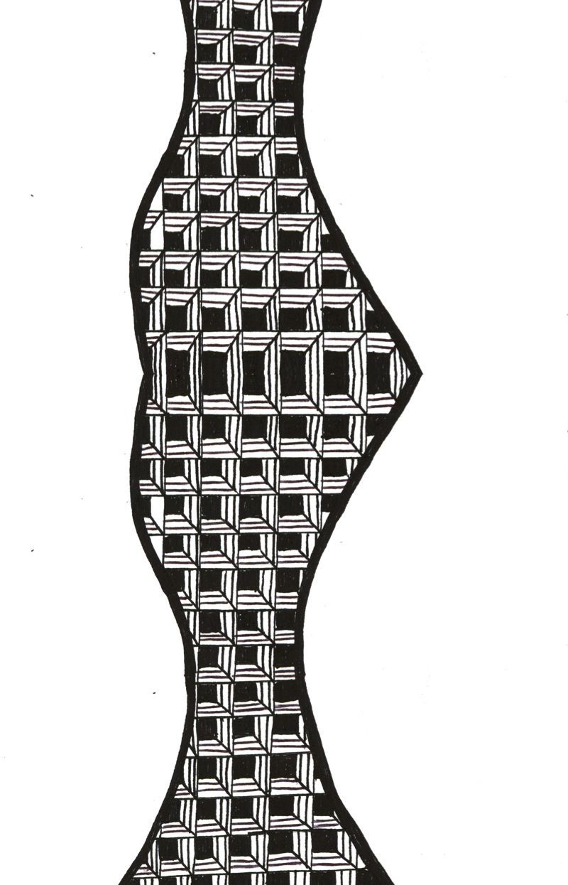
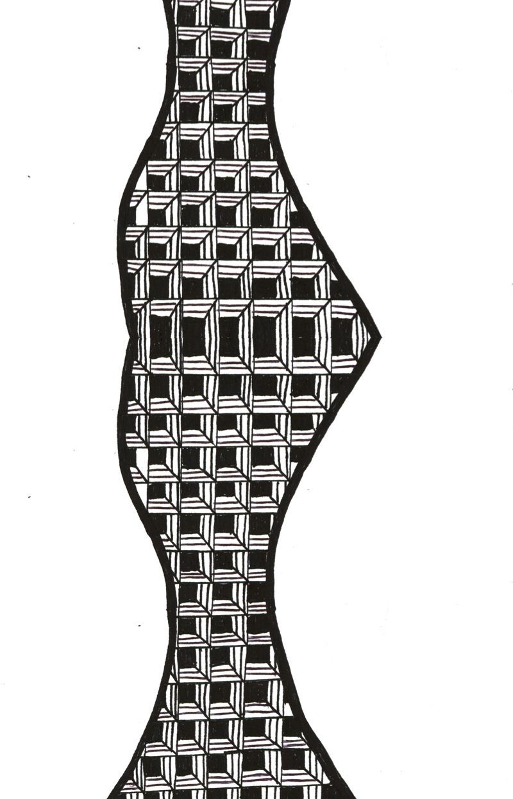

He asked us to think of what room this wallpaper would go in, what kind of people would buy it, and what behavior this wallpaper would instill.
So I thought of wallpaper and pictured an English home with fine china, an intellectual's music record playing as a quant upperclass couple enjoy some tea. I hated it, I could make a dainty quiet design that someone might enjoy but it wouldn't bring me any satisfaction to create. Next I thought of optical illusions, how insane would it feel to walk into a room covered wall to wall with eye-boggling patterns! My professor showed me Bridget Riley, who is very good at Op art. So I looked at her work and came up with three examples of where I could go with it.
 

And I didn't really like any of them. I mean, I liked them but they didn't feel right once they were on the wall. There was some piece missing before I could take the next step, but I took the next step anyways just to give myself something to do. I was in overdrive mode because spring break was right around the corner and I wanted to have something solid to work with when I got back from Arizona.
Below is after visiting Arizona, the biggest difference in the design being the use of color to compliment line.
Going to Arizona was absolutely a game changer for this project. A culture shock from Beverly, MA for sure. Everything I saw had some kind of attentive care that went into its creation. Architecture, landscaping, public places, even as I was landing I could see the red of the rock. Everything was flat, the sun was shining, and there was no snow to be heard of. Needless to say it was what I needed to find the direction I wanted to go in with my wallpaper.
Influenced by the strong South West accents I was surrounded with I came to the conclusion that I liked the figure I came up with. But it was only one element, why couldn't I make it more like the hand-woven wool patterns I'd seen in Mesa? I did, and I found that I liked it just a little bit more than before. Save, print, boom.